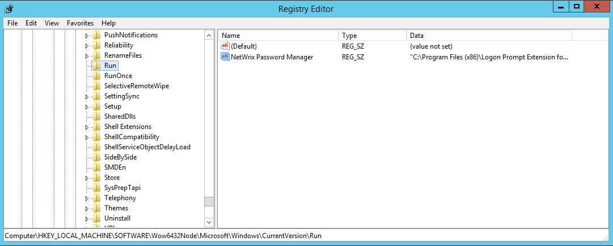
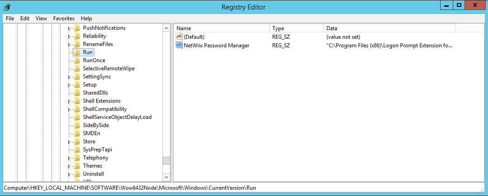

How can I remove Enrollment Wizard from startup after deployment of the client?
Please see KB2014 if you are looking for a way to disable the client from adding itself to startup. During deployment the client adds a Reg_SZ value called Netwrix Password Manager to the startup registry key.

In 32-bit OS the key is HKEY_LOCAL_MACHINESOFTWAREMicrosoftWindowsCurrentVersionRun In 64bit OS the key is HKEY_LOCAL_MACHINESOFTWAREWow6432NodeMicrosoftWindowsCurrentVersionRun To prevent the Enrollment wizard from running on startup you need to remove the value, or alternatively change its value to point to a non-existing executable. The value can be removed or changed on several machines by means of Group Policy.
Please see KB2014 if you are looking for a way to disable the client from adding itself to startup. During deployment the client adds a Reg_SZ value called Netwrix Password Manager to the startup registry key.

In 32-bit OS the key is HKEY_LOCAL_MACHINESOFTWAREMicrosoftWindowsCurrentVersionRun In 64bit OS the key is HKEY_LOCAL_MACHINESOFTWAREWow6432NodeMicrosoftWindowsCurrentVersionRun To prevent the Enrollment wizard from running on startup you need to remove the value, or alternatively change its value to point to a non-existing executable. The value can be removed or changed on several machines by means of Group Policy.